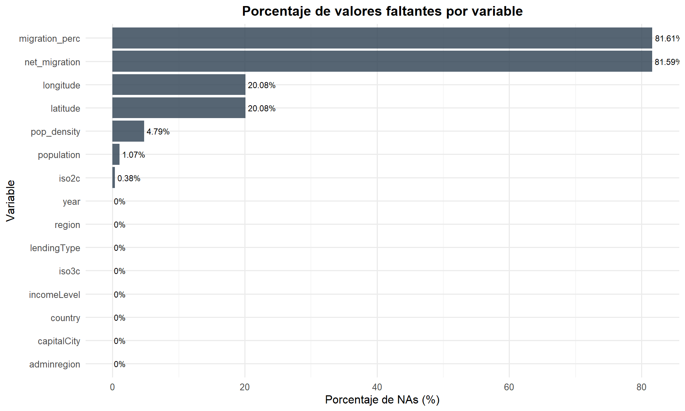

Capítulo 2 Estructura y Calidad del Dataset
2.1 Dimensiones y Estructura General
Comenzamos explorando las dimensiones del dataset, los tipos de variables y una vista previa de los datos.
- Filas (observaciones): 15576
- Columnas (variables): 15
## 'data.frame': 15576 obs. of 15 variables:
## $ country : chr "Arab World" "Arab World" "Arab World" "Arab World" ...
## $ year : int 2018 2017 2016 2015 2014 2013 2012 2011 2010 2009 ...
## $ population : num 4.20e+08 4.12e+08 4.04e+08 3.96e+08 3.88e+08 ...
## $ pop_density : num 37.4 36.7 36 35.3 34.5 ...
## $ net_migration : num NA -1408824 NA NA NA ...
## $ migration_perc: num NA -0.00342 NA NA NA ...
## $ iso3c : chr "ARB" "ARB" "ARB" "ARB" ...
## $ iso2c : chr "1A" "1A" "1A" "1A" ...
## $ region : chr "Aggregates" "Aggregates" "Aggregates" "Aggregates" ...
## $ adminregion : chr "" "" "" "" ...
## $ incomeLevel : chr "Aggregates" "Aggregates" "Aggregates" "Aggregates" ...
## $ lendingType : chr "Aggregates" "Aggregates" "Aggregates" "Aggregates" ...
## $ capitalCity : chr "" "" "" "" ...
## $ longitude : num NA NA NA NA NA NA NA NA NA NA ...
## $ latitude : num NA NA NA NA NA NA NA NA NA NA ...| country | year | population | pop_density | net_migration | migration_perc | iso3c | iso2c | region | adminregion | incomeLevel | lendingType | capitalCity | longitude | latitude |
|---|---|---|---|---|---|---|---|---|---|---|---|---|---|---|
| Arab World | 2018 | 419790588 | 37.37237 | NA | NA | ARB | 1A | Aggregates | Aggregates | Aggregates | NA | NA | ||
| Arab World | 2017 | 411898965 | 36.66980 | -1408824 | -0.0034203 | ARB | 1A | Aggregates | Aggregates | Aggregates | NA | NA | ||
| Arab World | 2016 | 404024433 | 35.96876 | NA | NA | ARB | 1A | Aggregates | Aggregates | Aggregates | NA | NA | ||
| Arab World | 2015 | 396028278 | 35.25690 | NA | NA | ARB | 1A | Aggregates | Aggregates | Aggregates | NA | NA | ||
| Arab World | 2014 | 387907748 | 34.53398 | NA | NA | ARB | 1A | Aggregates | Aggregates | Aggregates | NA | NA | ||
| Arab World | 2013 | 379705719 | 33.80379 | NA | NA | ARB | 1A | Aggregates | Aggregates | Aggregates | NA | NA |
| country | year | population | pop_density | net_migration | migration_perc | iso3c | iso2c | region | adminregion | incomeLevel | lendingType | capitalCity | longitude | latitude | |
|---|---|---|---|---|---|---|---|---|---|---|---|---|---|---|---|
| 15571 | Zimbabwe | 1965 | 4471177 | 11.55791 | NA | NA | ZWE | ZW | Sub-Saharan Africa | Sub-Saharan Africa (excluding high income) | Lower middle income | Blend | Harare | 31.0672 | -17.8312 |
| 15572 | Zimbabwe | 1964 | 4322861 | 11.17451 | NA | NA | ZWE | ZW | Sub-Saharan Africa | Sub-Saharan Africa (excluding high income) | Lower middle income | Blend | Harare | 31.0672 | -17.8312 |
| 15573 | Zimbabwe | 1963 | 4178726 | 10.80193 | NA | NA | ZWE | ZW | Sub-Saharan Africa | Sub-Saharan Africa (excluding high income) | Lower middle income | Blend | Harare | 31.0672 | -17.8312 |
| 15574 | Zimbabwe | 1962 | 4039201 | 10.44126 | -15009 | -0.0037158 | ZWE | ZW | Sub-Saharan Africa | Sub-Saharan Africa (excluding high income) | Lower middle income | Blend | Harare | 31.0672 | -17.8312 |
| 15575 | Zimbabwe | 1961 | 3905034 | 10.09444 | NA | NA | ZWE | ZW | Sub-Saharan Africa | Sub-Saharan Africa (excluding high income) | Lower middle income | Blend | Harare | 31.0672 | -17.8312 |
| 15576 | Zimbabwe | 1960 | 3776681 | NA | NA | NA | ZWE | ZW | Sub-Saharan Africa | Sub-Saharan Africa (excluding high income) | Lower middle income | Blend | Harare | 31.0672 | -17.8312 |
El dataset tiene una estructura de panel de datos (datos longitudinales), donde cada fila representa un país en un año particular. Esto permite analizar tanto comparaciones transversales (entre países en un mismo año) como evoluciones temporales.
2.2 Resumen Estadístico
## country year population pop_density
## Length:15576 Min. :1960 Min. :3.893e+03 Min. : 0.099
## Class :character 1st Qu.:1974 1st Qu.:9.268e+05 1st Qu.: 19.684
## Mode :character Median :1989 Median :6.419e+06 Median : 51.760
## Mean :1989 Mean :2.079e+08 Mean : 278.374
## 3rd Qu.:2004 3rd Qu.:4.245e+07 3rd Qu.: 126.598
## Max. :2018 Max. :7.594e+09 Max. :21389.100
## NA's :167 NA's :746
## net_migration migration_perc iso3c iso2c
## Min. :-23348620 Min. :-0.264 Length:15576 Length:15576
## 1st Qu.: -161704 1st Qu.:-0.014 Class :character Class :character
## Median : -10817 Median :-0.002 Mode :character Mode :character
## Mean : -272931 Mean :-0.002
## 3rd Qu.: 26819 3rd Qu.: 0.006
## Max. : 23392352 Max. : 0.787
## NA's :12708 NA's :12711
## region adminregion incomeLevel lendingType
## Length:15576 Length:15576 Length:15576 Length:15576
## Class :character Class :character Class :character Class :character
## Mode :character Mode :character Mode :character Mode :character
##
##
##
##
## capitalCity longitude latitude
## Length:15576 Min. :-175.22 Min. :-41.286
## Class :character 1st Qu.: -15.18 1st Qu.: 4.174
## Mode :character Median : 19.26 Median : 17.300
## Mean : 19.14 Mean : 18.889
## 3rd Qu.: 50.54 3rd Qu.: 40.050
## Max. : 179.09 Max. : 64.184
## NA's :3127 NA's :3127| Name | df |
| Number of rows | 15576 |
| Number of columns | 15 |
| _______________________ | |
| Column type frequency: | |
| character | 8 |
| numeric | 7 |
| ________________________ | |
| Group variables | None |
Variable type: character
| skim_variable | n_missing | complete_rate | min | max | empty | n_unique | whitespace |
|---|---|---|---|---|---|---|---|
| country | 0 | 1 | 4 | 52 | 0 | 264 | 0 |
| iso3c | 0 | 1 | 0 | 3 | 118 | 263 | 0 |
| iso2c | 59 | 1 | 0 | 2 | 118 | 262 | 0 |
| region | 0 | 1 | 0 | 26 | 118 | 9 | 0 |
| adminregion | 0 | 1 | 0 | 50 | 7434 | 7 | 0 |
| incomeLevel | 0 | 1 | 0 | 19 | 118 | 6 | 0 |
| lendingType | 0 | 1 | 0 | 14 | 118 | 6 | 0 |
| capitalCity | 0 | 1 | 0 | 19 | 3127 | 212 | 0 |
Variable type: numeric
| skim_variable | n_missing | complete_rate | mean | sd | p0 | p25 | p50 | p75 | p100 | hist |
|---|---|---|---|---|---|---|---|---|---|---|
| year | 0 | 1.00 | 1989.00 | 17.03 | 1960.00 | 1974.00 | 1989.00 | 2004.00 | 2.018000e+03 | ▇▇▇▇▇ |
| population | 167 | 0.99 | 207886506.57 | 686779636.78 | 3893.00 | 926841.00 | 6418773.00 | 42449038.00 | 7.594270e+09 | ▇▁▁▁▁ |
| pop_density | 746 | 0.95 | 278.37 | 1438.51 | 0.10 | 19.68 | 51.76 | 126.60 | 2.138910e+04 | ▇▁▁▁▁ |
| net_migration | 12708 | 0.18 | -272931.14 | 2462397.01 | -23348620.00 | -161703.75 | -10817.00 | 26819.25 | 2.339235e+07 | ▁▁▇▁▁ |
| migration_perc | 12711 | 0.18 | 0.00 | 0.05 | -0.26 | -0.01 | 0.00 | 0.01 | 7.900000e-01 | ▁▇▁▁▁ |
| longitude | 3127 | 0.80 | 19.14 | 70.23 | -175.22 | -15.18 | 19.26 | 50.54 | 1.790900e+02 | ▁▃▇▃▂ |
| latitude | 3127 | 0.80 | 18.89 | 24.15 | -41.29 | 4.17 | 17.30 | 40.05 | 6.418000e+01 | ▂▃▇▆▅ |
El resumen estadístico revela una gran variabilidad en la población entre países — desde microestados con miles de habitantes hasta gigantes demográficos como China e India. Esta alta dispersión justifica el uso de escalas logarítmicas en las visualizaciones posteriores.
2.3 Análisis de Valores Faltantes (NA)
na_por_columna <- colSums(is.na(df))
na_porcentaje <- round(colSums(is.na(df)) / nrow(df) * 100, 2)
na_resumen <- data.frame(
Variable = names(na_por_columna),
NAs = na_por_columna,
Porcentaje = na_porcentaje
)
na_resumen <- na_resumen[order(-na_resumen$Porcentaje), ]
kable(na_resumen, row.names = FALSE,
caption = "Valores faltantes por variable")| Variable | NAs | Porcentaje |
|---|---|---|
| migration_perc | 12711 | 81.61 |
| net_migration | 12708 | 81.59 |
| longitude | 3127 | 20.08 |
| latitude | 3127 | 20.08 |
| pop_density | 746 | 4.79 |
| population | 167 | 1.07 |
| iso2c | 59 | 0.38 |
| country | 0 | 0.00 |
| year | 0 | 0.00 |
| iso3c | 0 | 0.00 |
| region | 0 | 0.00 |
| adminregion | 0 | 0.00 |
| incomeLevel | 0 | 0.00 |
| lendingType | 0 | 0.00 |
| capitalCity | 0 | 0.00 |
- Total de valores faltantes: 32645
- Total de celdas en el dataset: 233,640
- Porcentaje global de NAs: 13.97%
ggplot(na_resumen, aes(x = reorder(Variable, Porcentaje), y = Porcentaje)) +
geom_bar(stat = "identity", fill = "#E74C3C", alpha = 0.8) +
geom_text(aes(label = paste0(Porcentaje, "%")), hjust = -0.1, size = 3) +
coord_flip() +
labs(title = "Porcentaje de Valores Faltantes por Variable",
x = "Variable", y = "Porcentaje de NAs (%)") +
theme_minimal(base_size = 12) +
theme(plot.title = element_text(face = "bold", hjust = 0.5))
Figure 2.1: Porcentaje de valores faltantes por variable
Las variables de migración (
net_migrationymigration_perc) concentran la mayoría de los valores faltantes, lo cual es esperado dado que estas estadísticas solo se recopilan cada cinco años. Las variables demográficas básicas (population,pop_density) tienen una cobertura prácticamente completa, lo que permite realizar análisis robustos sobre tendencias poblacionales.